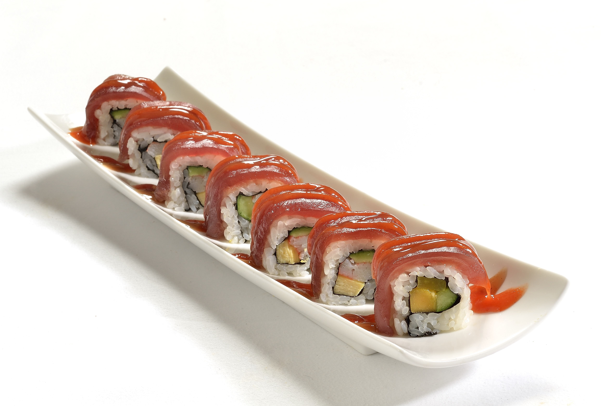
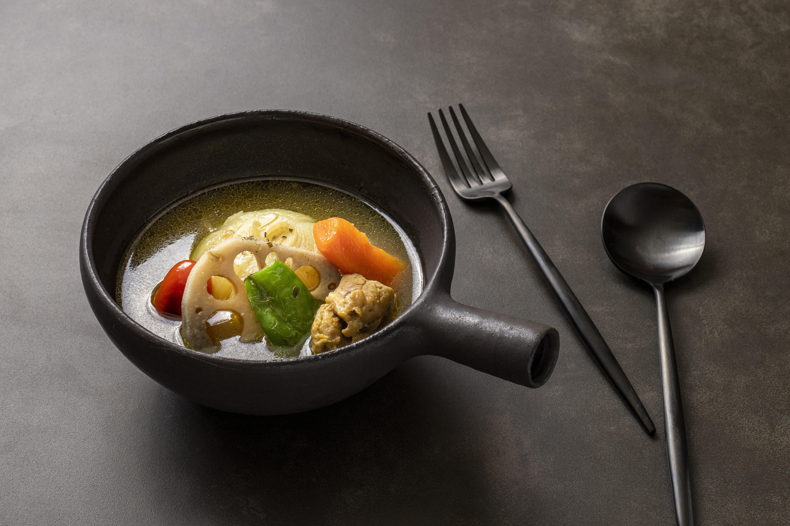

Descubre la esencia de la gastronomía japonesa
Explora la delicadeza del sushi, la frescura de sus ingredientes y el arte culinario que convierte cada plato en una experiencia única
Experiencias japonesas en Gastro
Sumérgete en la tradición de la cocina japonesa, donde cada pieza de sushi es una combinación perfecta de técnica, precisión y sabor. En Gastro cuidamos cada detalle para ofrecerte una experiencia gastronómica auténtica.
Nuestros chefs elaboran cada plato con ingredientes frescos y de alta calidad, respetando las técnicas tradicionales mientras incorporan un toque contemporáneo. Cada rollo está diseñado para ofrecer equilibrio y armonía en cada bocado.
Sabores que transmiten tradición
La cocina japonesa se caracteriza por su respeto al producto y su presentación cuidada. En Gastro seguimos esta filosofía para ofrecer platos que destacan tanto por su sabor como por su estética.
El arroz perfectamente preparado, el pescado fresco y la combinación de ingredientes crean una experiencia única que va más allá de la comida, convirtiéndose en un auténtico arte culinario.
Queremos que cada visita sea un viaje gastronómico donde descubras nuevos matices y disfrutes de una cocina que combina tradición y modernidad.


Sopa japonesa tradicional
Un plato reconfortante que combina caldos intensos con ingredientes frescos y llenos de sabor.
La sopa japonesa es uno de los pilares de su gastronomía, destacando por la profundidad de sus caldos y el equilibrio entre sus ingredientes. Elaborada a base de miso o caldo dashi, cada receta refleja la tradición y el cuidado por los detalles.
En Gastro, preparamos nuestras sopas con ingredientes seleccionados como fideos suaves, verduras frescas y proteínas de calidad, creando una combinación perfecta entre textura y sabor en cada cucharada.